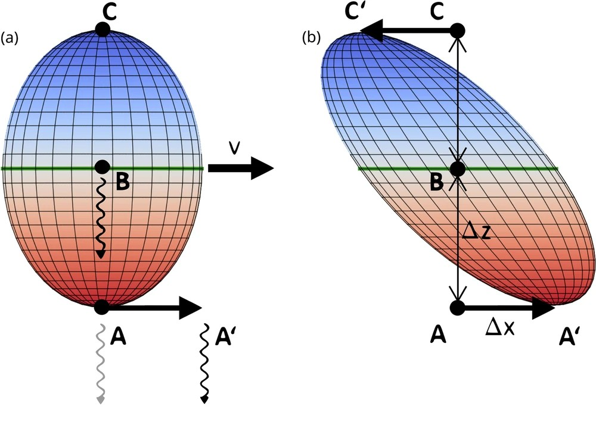

Simulating the Relatvistic Terrel-Penrose Effect
Introduction
This project aimed at comparing the effects length contraction to the the visual apperance of shapes at relativistic speeds. Until 1959 the visual apperance 3D objects was not considered, only the physical effects in different reference frames. Rodger Penrose and James Terrell, then independantly showed objects tend to rotate instead of contract at relativistic speeds.
This project was developed using C# and the Unity Engine, making use of the MathNet Numerics library for the Linear Algebra
Converting The Lorentz Transformation into 3D Space.
This project will be focuing on inertial frames of reference, and visualising effects in 3D. First Eisteins physical length contraction with be modeled in three dimensional space. Building off of my Lecture notes [1], The lorentz transformation was given found in 1 dimensional space, assuing that all velocities were in the x direction, as shown here:
\[ \begin{aligned} t &= \gamma\left(t' + \frac{v x'}{c^2}\right), \\ x &= \gamma\left(x' + v t'\right), \\ y &= y', \\ z &= z', \end{aligned} \tag{1}\]
where
- (t, x, y, z) are the time and spatial coordinates of an event measured in frame (F),
- (t’, x’, y’, z’) are the corresponding coordinates measured in frame (F’),
- (v) is the relative velocity of frame (F’) with respect to frame (F) along the (x)-axis,
- (c) is the speed of light in vacuum,
- (\(\gamma\)) is the Lorentz factor, defined by
\[ \gamma = \frac{1}{\sqrt{1 - \frac{v^2}{c^2}}}. \]
This can then be converted to three dimensional space with use of the vectors \(\vec{r}\) and \(\vec{v}\) where \(\vec{r}\) is the position vector, \(\vec{v}\) is the velocity in reference frame \(F\). The position vector with respect to the origin in frame \(F'\) can then be written as: \[\vec{r}'= r_{\perp} + \gamma (r_{\parallel} + vt)\hat{r}_{\parallel} \ \tag{2}\]
where \(t\) is time in frame \(F\), and \(\vec{r}_{\parallel}\) and \(\vec{r}_{\perp}\) represent its parallel and perpendicular components with respect to \(\vec{v}\).
Noting the equations \[ \vec{r}_{\perp} = \vec{r} - \vec{r}_{\parallel} \] \[ \vec{r}_{\parallel} = \frac{(\vec{r} \cdot \vec{v})}{v^2}\vec{v} \]
These can be subbed into Equation 2 to obtain \[ \vec{r}' = \vec{r} + (\gamma - 1)\frac{\vec{r} \cdot \vec{v}}{v^2}\vec{v} - \gamma \vec{v}t \tag{3}\]
In addition to this, converting the lorentz transformation for \(t'\) into vector form we obtain the equation \[ t' = \gamma ( t - \frac{(v \cdot \vec{r}_{\parallel})}{c^2}) \tag{4}\]
Substituting (Equation 3) and (Equation 4) yields the \(4 \times 4\) matrix for a general Lorentz transformation. This transformation is known as a Lorentz boost [2] [3]. \[ \begin{pmatrix} ct' \\ x' \\ y' \\ z' \end{pmatrix} = \begin{pmatrix} \gamma & -\dfrac{\gamma}{c} v_x & -\dfrac{\gamma}{c} v_y & -\dfrac{\gamma}{c} v_z \\[6pt] -\dfrac{\gamma}{c} v_x & 1 + (\gamma - 1)\dfrac{v_x^2}{v^2} & (\gamma - 1)\dfrac{v_x v_y}{v^2} & (\gamma - 1)\dfrac{v_x v_z}{v^2} \\[6pt] -\dfrac{\gamma}{c} v_y & (\gamma - 1)\dfrac{v_y v_x}{v^2} & 1 + (\gamma - 1)\dfrac{v_y^2}{v^2} & (\gamma - 1)\dfrac{v_y v_z}{v^2} \\[6pt] -\dfrac{\gamma}{c} v_z & (\gamma - 1)\dfrac{v_z v_x}{v^2} & (\gamma - 1)\dfrac{v_z v_y}{v^2} & 1 + (\gamma - 1)\dfrac{v_z^2}{v^2} \end{pmatrix} \begin{pmatrix} ct \\ x \\ y \\ z \end{pmatrix} \tag{5}\]
The Lorentz boost is then applied to all the vertices of the shape in question. However the time at each vertex depends on its distance from the origin. Let the origin be the observer in our script and let its frame of reference be \(F\). While the frame of reference for the vertices if \(F'\). Our known values are the constant time \(t\) in frame \(F\) and the positions of the vertices in frame \(F'\), as the position values are related to \(t\) we first need to do the inverse lorentz transformation of \(t\) to get \(t'\) to then correctly calculate the positions of the vertices in the observer reference frame \(F\). Note, the inverse lorentz transformation can just be found by using the negative velocity, the same property as the Gallilean trasformation.
Applying this to a cube the effects are shown in [figure?]
Applying the Terrel-Penrose Effect
While the lorentz contraction is a physical effect shown at relativistic speeds, when taking into account the velocity of the object travelling at fractions of the speed of light, the speed of light cannot be thought of as reaching the observer instantaneously. This means that photons leaving an object at the same time but not at exactly the same point, wont reach the observer at the same time, causing the object to look warped.

This can be solved by creating a quadratic equation between the distance between vertices along teh same axis for simple geometric shapes [5], however a simpler solution can be done using the equation below: \[ \vec{r_1} = r_0 - \vec{\beta} \|{r_0}\| \]
where \(r_1\) is the updated position of the vertex, \(r_0\) is the initial position of the vertex and \(\vec{\beta} = \vec{v}/c\). This equation can be used as the velocity is constant.
figures of the simulation give multiple different ideas